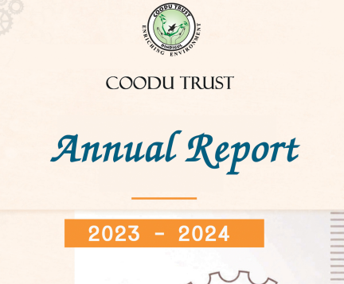

Coodu Trust
Home
About
Programs
Environment and Resilience
Watershed Management
Plantation & Afforestation
Water Resource Management
Soil & Land Management
Biodiversity Conservation
Climate Change Adaptation & Mitigation
Sustainable Agriculture
Farmer Collectivization & Agribusiness
Livestock & Allied Activities
Horticulture & Diversified Farming
Agricultural Technology & Youth Engagement
Organic Farming Practices
Women Empowerment
Social Empowerment & Leadership
Microfinance & Financial Inclusion
Entrepreneurship & Enterprise Development
SHG & Community Mobilization
Education and Skilling
Vocational & Livelihood Training
Digital Literacy & IT Training
Formal & Higher Education Support
School Infrastructure Development
Health, Sanitation & Waste Management
Health Support & Rehabilitation
Community Health Services
Disease-Specific Interventions
Water Quality & Safety
Sanitation & Hygiene Infrastructure
Solid Waste Management
Consultancy and HR Management
Technology & Knowledge Dissemination
Strategic Planning & Advisory Services
Human Resource & Staffing Solutions
Get Involved
Volunteer
Partner with Us
Donate
Documents
Media
Contact
Donate
Documents
Our comprehensive resource library showcasing research, reports, and publications.
Annual Report | March 2024
Annual Report 2023-2024: Scaling Impact & Innovation
Annual Report | March 2023
Annual Report 2022-2023: Integrating Sustainability
Annual Report | March 2022
Annual Report 2021-2022: Building Back Stronger
Annual Report | March 2021
Annual Report 2020-2021: Adapting to New Challenges
Annual Report | March 2020
Annual Report 2019-2020: Two Decades of Service
Annual Report | March 2019
Annual Report 2018-2019: Scaling Impact & Sustainability
Annual Report | March 2018
Annual Report 2017-2018: Technology for Development
Annual Report | March 2017
Annual Report 2016-2017: Inclusive Growth & Empowerment
Annual Report | March 2016
Annual Report 2015-2016: Sustainable Development Goals
Annual Report | March 2015
Annual Report 2014-2015: Innovation in Rural Development
Annual Report | March 2014
Annual Report 2013-2014: Expanding Horizons
Annual Report | March 2013
Annual Report 2012-2013: Community Development & Growth
Annual Report | March 2012
Annual Report 2011-2012: Strengthening Rural Communities
Annual Report | March 2011
Annual Report 2010-2011: A Decade of Service Excellence
Annual Report | March 2010
Annual Report 2009-2010: Expanding Our Reach
Annual Report | March 2009
Annual Report 2008-2009: Building Sustainable Futures
Annual Report | March 2008
Annual Report 2007-2008: Women's Empowerment Focus
Annual Report | March 2007
Annual Report 2006-2007: Environmental Conservation Initiatives
Annual Report | March 2006
Annual Report 2005-2006: Health & Sanitation Programs
Annual Report | March 2005
Annual Report 2004-2005: Watershed Development Success
Annual Report | March 2004
Annual Report 2003-2004: Community Mobilization
Annual Report | March 2003
Annual Report 2002-2003: Early Growth & Development
Annual Report | March 2002
Annual Report 2001-2002: Foundation Years

Case Study | 2024
Sustainable Agriculture Practices in Drought-Prone Areas
Publication | 2023
Women's Self-Help Groups: A Model for Economic Empowerment
Research Paper | 2024
Impact Assessment of Watershed Development Programs
Research Paper | 2023
Community-Based Health Interventions in Rural Settings